| Trang phục nam | Số lượng | Trang phục nữ | Số lượng |
| Đầu nam | 123 | Đầu nữ | 78 |
| Áo nam | 356 | Áo nữ | 123 |
-
AK47
AK có sát thương rất cao nhưng đi kèm với độ giật lớn, khiến nó khó kiểm soát ở cự ly xa. Tuy nhiên, nếu người chơi có khả năng kiểm soát tốt, AK có thể gây ra lượng sát thương khổng lồ trong các trận đấu tầm trung và xa.
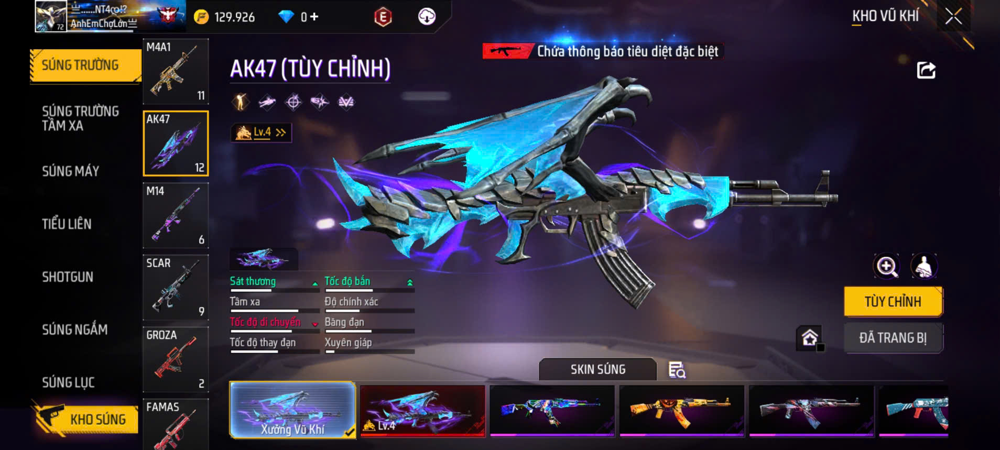 -
M4A1
M4A1 là khẩu AR có độ ổn định và độ chính xác rất cao, làm cho nó trở thành vũ khí lý tưởng trong các cuộc giao tranh tầm trung và xa. So với AK, M4A1 có độ giật thấp hơn và dễ kiểm soát hơn.

-
SCAR
SCAR là một trong những khẩu AR dễ sử dụng nhất trong Free Fire với độ ổn định cao, tốc độ bắn tốt và độ giật thấp. Điều này làm cho SCAR trở thành lựa chọn hoàn hảo cho người chơi muốn một khẩu súng dễ kiểm soát.
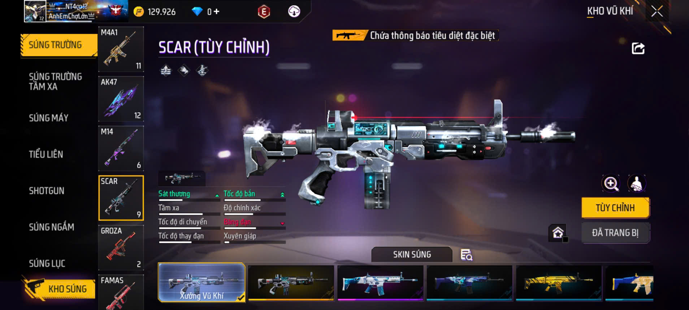 -
UMP
UMP có tốc độ bắn cao và độ chính xác ổn định, phù hợp cho chiến đấu tầm gần và trung. Nó có khả năng xuyên giáp tốt và thường được người chơi ưa chuộng trong các cuộc giao tranh ngắn.
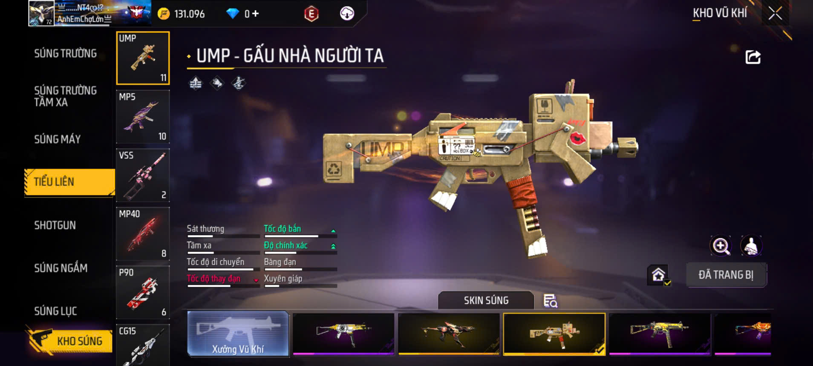 -
MP40
MP40 nổi tiếng với tốc độ bắn nhanh nhất trong dòng SMG, khiến nó cực kỳ mạnh mẽ ở cự ly gần. Tuy nhiên, MP40 có băng đạn nhỏ và độ chính xác giảm sút khi bắn xa.
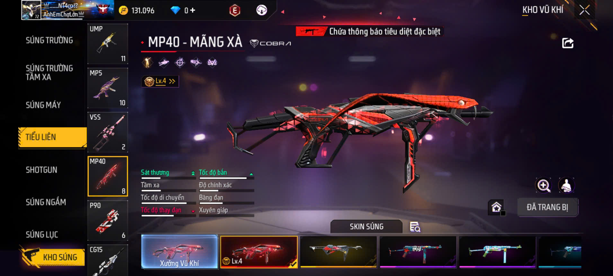 -
MP5
MP5 có độ ổn định cao và tốc độ bắn khá tốt, rất hiệu quả trong các trận đấu tầm gần. So với UMP và MP40, MP5 có thể dễ kiểm soát hơn, nhưng sát thương không mạnh bằng MP40.
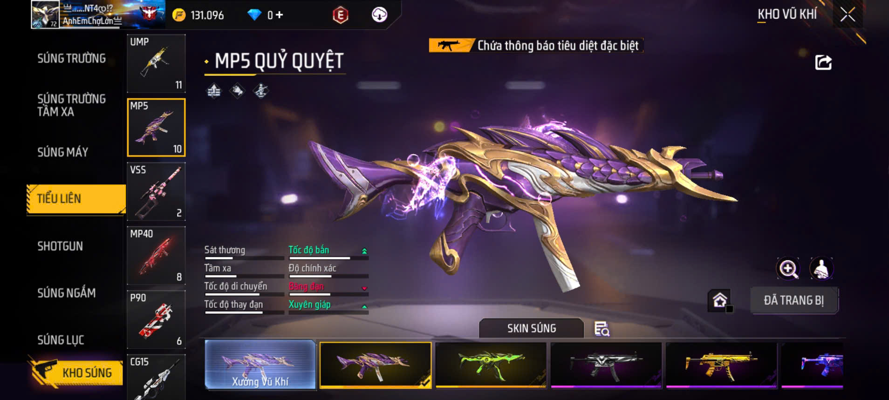 -
K98
Kar98k là khẩu súng bắn tỉa có tốc độ bắn nhanh hơn AWM nhưng sát thương thấp hơn một chút. Tuy nhiên, nó vẫn rất mạnh mẽ và có thể tiêu diệt kẻ địch từ xa với một phát bắn chính xác.
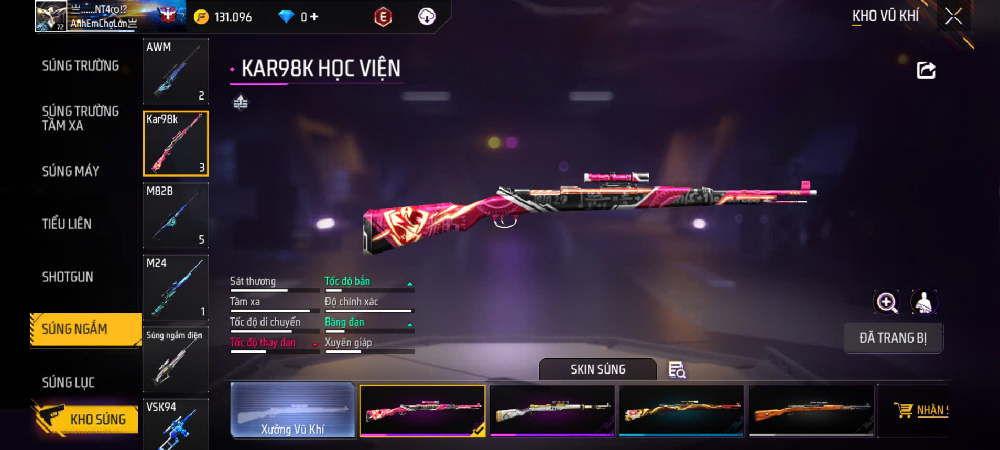 -
M82B
M82B là khẩu bắn tỉa nổi bật với khả năng xuyên giáp vàxuyên vật cản như tường keo. Đây là vũ khí rất lợi hại khi đối đầu với các đối thủ có trang bị phòng thủ mạnh mẽ.
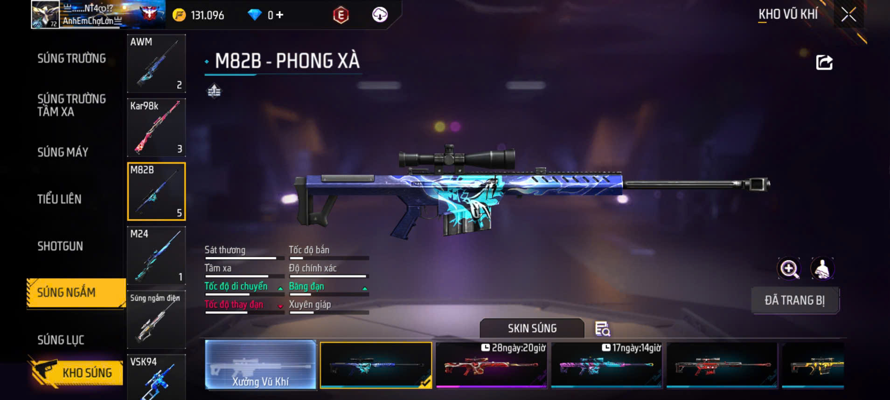 -
AWM
AWM là khẩu súng bắn tỉa mạnh nhất trong Free Fire với độ chính xác cao và sát thương cực kỳ lớn. Nó có thể tiêu diệt kẻ thù chỉ với một viên đạn vào đầu ngay cả khi họ có trang bị mũ bảo hiểm cấp cao.
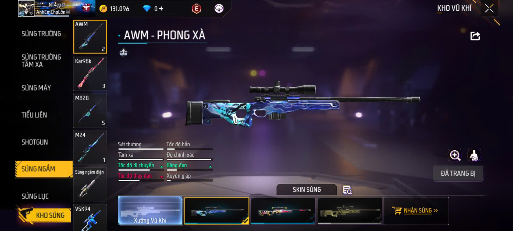 -
M1887
M1887 là một trong những khẩu shotgun mạnh nhất trong Free Fire. Nó chỉ có 2 viên đạn mỗi lần nạp, nhưng sức mạnh và độ xuyên giáp rất cao, có thể hạ gục đối thủ chỉ với một phát bắn ở khoảng cách gần.
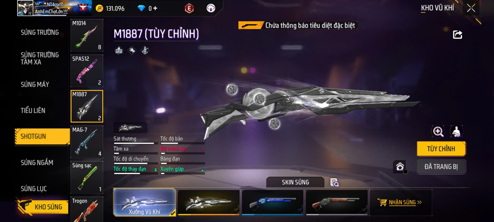 -
TROGON
Trogon là khẩu súng độc đáo kết hợp giữa shotgun và launcher (phóng lựu). Ở chế độ shotgun, nó hoạt động như một khẩu súng ngắn với sát thương cao. Ở chế độ launcher, nó có thể bắn lựu đạn, rất hữu ích để gây sát thương diện rộng.
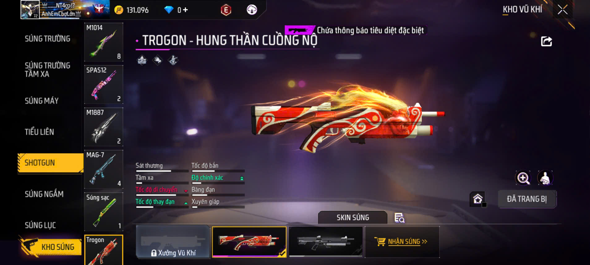 -
M1014
M1014 là khẩu shotgun bán tự động có sát thương rất cao trong phạm vi cực gần. Tuy nhiên, nó yêu cầu người chơi phải đến rất gần đối thủ để phát huy tối đa sức mạnh.

-
DAO
Dao là một vũ khí cận chiến nhẹ, giúp người chơi di chuyển nhanh hơn khi được trang bị. Tuy không có khả năng phòng thủ như chảo, dao có tốc độ tấn công nhanh, thích hợp để gây sát thương gần.
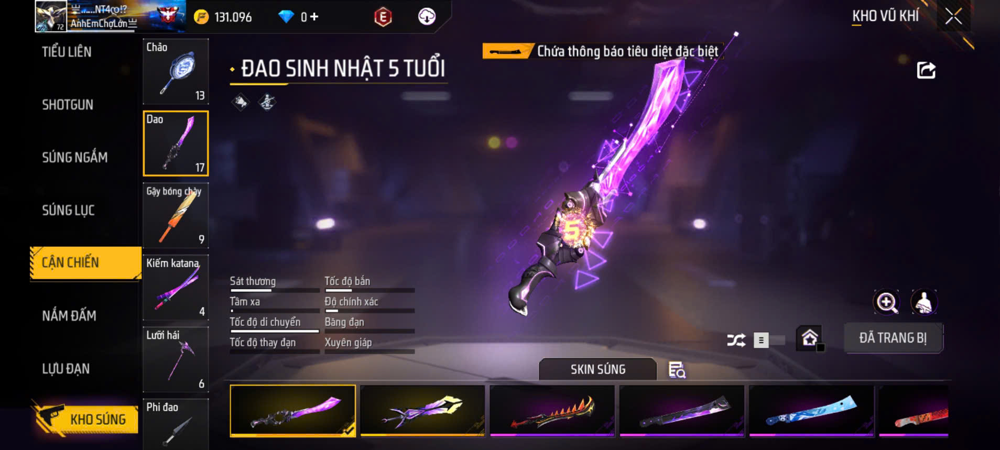 -
CHẢO
Chảo không chỉ là một vũ khí cận chiến dùng để tấn công mà còn có khả năng chặn đạn khi được trang bị trên lưng. Điều này khiến chảo trở thành một vật dụng đa năng, giúp bảo vệ người chơi.
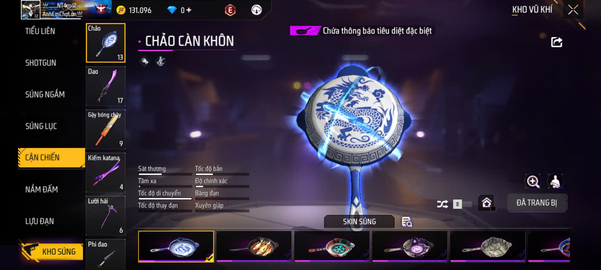 -
GẬY
Gậy có phạm vi tấn công rộng hơn dao và chảo, nhưng sát thương của nó tương đối thấp. Đây là vũ khí thích hợp để tấn công cận chiến, nhưng ít phổ biến hơn so với các lựa chọn khác.
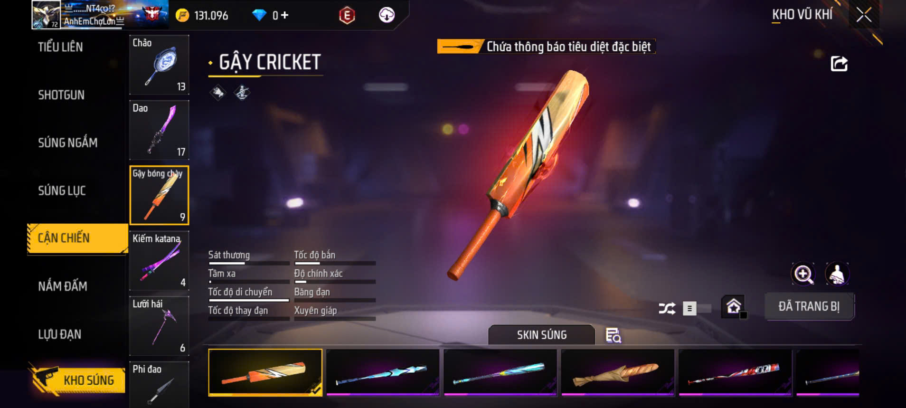
| Súng Trường | Tiểu Liên | Tỉa | Shotgun | Khác |
|---|---|---|---|---|
|
|
|
|
|
|
- Xếp hạng sinh tồn
- Xếp hạng tử chiến